Candidate List 20260630Last night — ZTF: 1,438 passed basic cuts (25 young) · LSST: 6,464 passed basic cuts (808 young)Previous Day Next Day
Section 1: New Sources (age<1d) Section 2: Old (1-5d) sources observed last nightplaceholder
Section 1: New Afterglow/FBOT Cands Last Night (6)
1. [ZTF] ZTF26abekjzj (FBOT?) [Back to Top] [Share] [Trigger Swift] [Fritz Alert] [Fritz Source] [Lasair]RA, Dec: 239.90437, 7.85036 15h59m37.05s, 7d51m1.30sGalactic (l, b): 18.52519, 41.5335 ext(g-r) = 0.044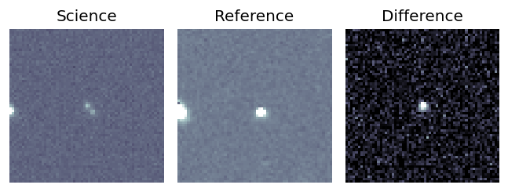
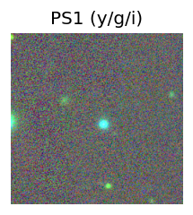
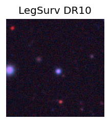
TESS: Sectors [ 51 117]
PS1: 0 sources in 3 arcsec
LegacySurvey: 1 sources in 3 arcsec Closest: d = 3.34 arcsec, 220.4 deg (east of north) photoz=0.12 (68% bounds 0.01, 0.68), type=PSF peak abs mag = -20.32 (68% bounds -15.56, -24.66)
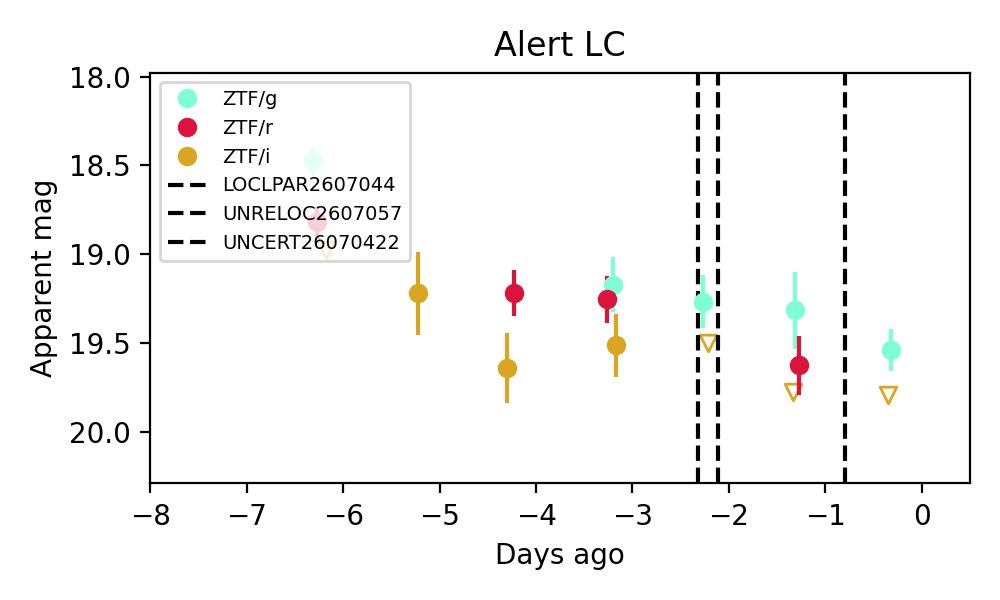
Extinction-corrected gr color:
From alerts: -0.39 +/- 0.13 mag
Rise Rate:
g: 0.44 mag/day
r: 0.32 mag/day
Fade Rate:
2. [LSST] 170587108620632246 (FBOT?) [Back to Top] [Fritz Alert] [Fritz Source] [Lasair]RA, Dec: 333.53746, -5.75179 22h14m8.99s, -5d-45m-6.46sGalactic (l, b): 55.48008, -46.94711 WARNING: 4.84 deg from ecliptic plane ext(g-r) = 0.069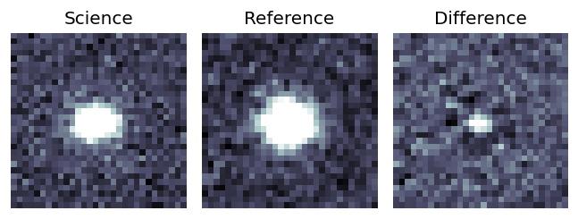
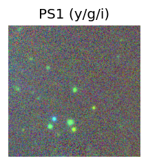
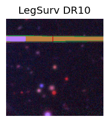
TESS: Sectors [ 42 92 116]
PS1: 0 sources in 3 arcsec
LegacySurvey: 1 sources in 3 arcsec Closest: d = 0.01 arcsec, 147.4 deg (east of north) photoz=0.42 (68% bounds 0.36, 0.52), type=REX peak abs mag = -20.03 (68% bounds -19.63, -20.56)
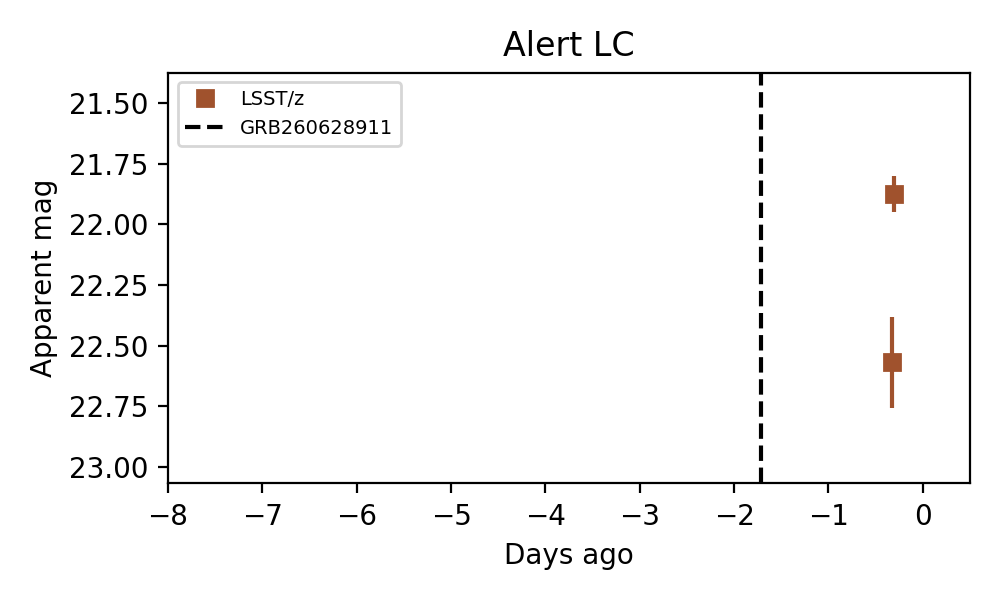
Rise Rate:
z: 30.76 mag/day
Fade Rate:
3. [LSST] 170604712944992332 (Afterglow?) [Back to Top] [Fritz Alert] [Fritz Source] [Lasair]RA, Dec: 332.2108, -4.57835 22h 8m50.59s, -4d-34m-42.07sGalactic (l, b): 55.79644, -45.19369 ext(g-r) = 0.073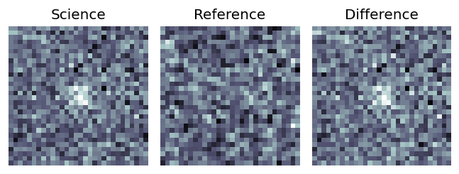
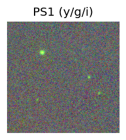
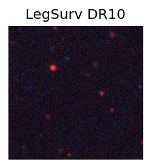
TESS: Sectors [ 42 55 92 116]
PS1: 0 sources in 3 arcsec
LegacySurvey: 0 sources in 3 arcsec
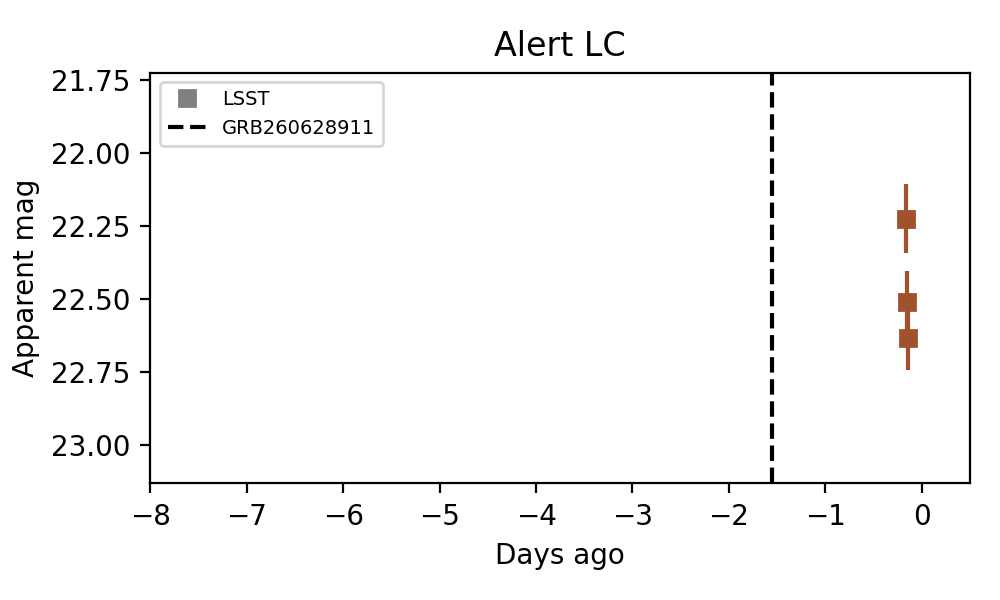
Rise Rate:
Fade Rate:
z: 18.34 mag/day
4. [LSST] 170604712984838402 (Afterglow?) [Back to Top] [Fritz Alert] [Fritz Source] [Lasair]RA, Dec: 334.00979, -4.67232 22h16m2.35s, -4d-40m-20.37sGalactic (l, b): 57.16759, -46.71543 ext(g-r) = 0.104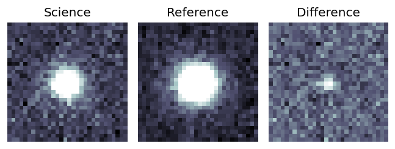
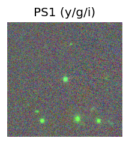
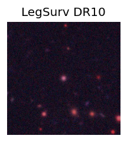
TESS: Sectors [ 42 92 116]
SDSS (<15 kpc):Found SDSS phot-z: z=0.38; peak abs mag = -19.61
PS1: 0 sources in 3 arcsec
LegacySurvey: 1 sources in 3 arcsec Closest: d = 0.08 arcsec, 159.2 deg (east of north) photoz=0.37 (68% bounds 0.29, 0.42), type=REX peak abs mag = -19.41 (68% bounds -18.85, -19.73)
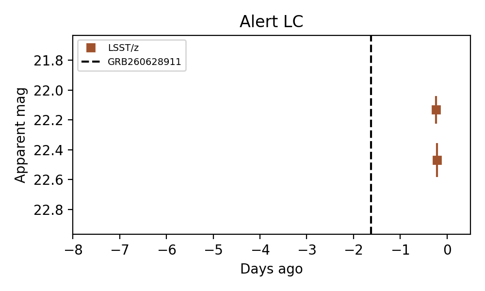
Rise Rate:
Fade Rate:
z: 15.3 mag/day
5. [LSST] 170604727475634352 (FBOT?) [Back to Top] [Fritz Alert] [Fritz Source] [Lasair]RA, Dec: 345.16252, -15.20259 23h 0m39.00s, -15d-12m-9.32sGalactic (l, b): 52.13523, -61.64343 ext(g-r) = 0.035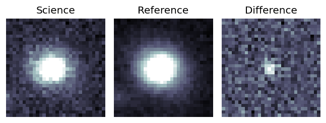
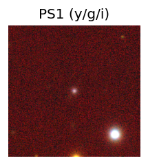
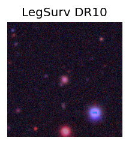
TESS: Sectors [ 2 29 42 69 70 92 96]
PS1: 0 sources in 3 arcsec
LegacySurvey: 1 sources in 3 arcsec Closest: d = 0.27 arcsec, 171.3 deg (east of north) photoz=0.38 (68% bounds 0.33, 0.45), type=DEV peak abs mag = -21.45 (68% bounds -21.12, -21.91)
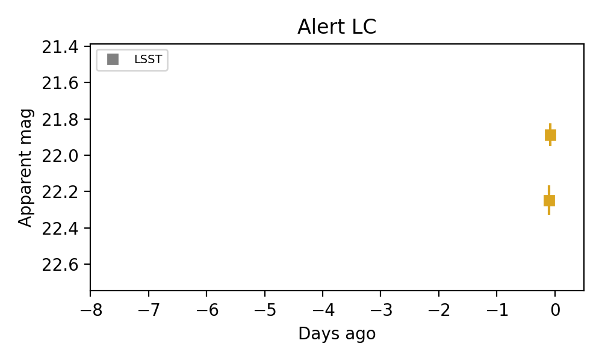
Rise Rate:
i: 17.24 mag/day
Fade Rate:
6. [LSST] 170604729895747761 (Afterglow?) [Back to Top] [Fritz Alert] [Fritz Source] [Lasair]RA, Dec: 352.37287, -1.52943 23h29m29.49s, -1d-31m-45.96sGalactic (l, b): 81.98587, -57.73342 WARNING: 1.62 deg from ecliptic plane ext(g-r) = 0.054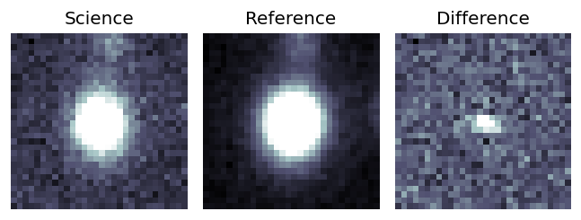
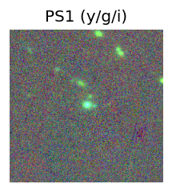
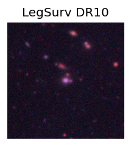
TESS: Sectors [42 70 92]
SDSS (<15 kpc):Found SDSS phot-z: z=0.34; peak abs mag = -20.78
PS1: 0 sources in 3 arcsec
LegacySurvey: 1 sources in 3 arcsec Closest: d = 0.04 arcsec, 146.7 deg (east of north) photoz=0.33 (68% bounds 0.28, 0.37), type=SER peak abs mag = -20.59 (68% bounds -20.18, -20.82)
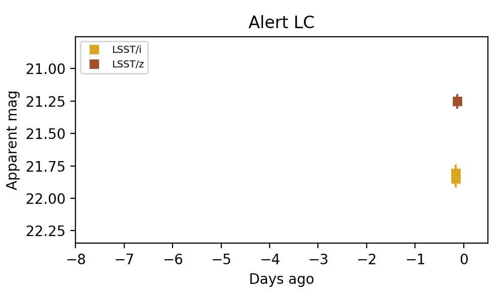
Extinction-corrected gr color:
From alerts: 0.02 +/- 0.1 mag
Extinction-corrected gi color:
From alerts: 0.82 +/- 99 mag
Extinction-corrected iz color:
From alerts: 0.55 +/- 0.07 mag
Consistent with synchrotron, g-r>0!
Rise Rate:
r: 0.02 mag/day
Fade Rate:
r: 7.26 mag/day
Section 2: Older Sources Observed Last Night (5)
0. [ZTF] ZTF26abekfzh (FBOT?) [Back to Top] [Share] [Trigger Swift] [Fritz Alert] [Fritz Source] [Lasair]RA, Dec: 206.18123, 1.91457 13h44m43.49s, 1d54m52.45sGalactic (l, b): 332.03298, 61.73786 ext(g-r) = 0.032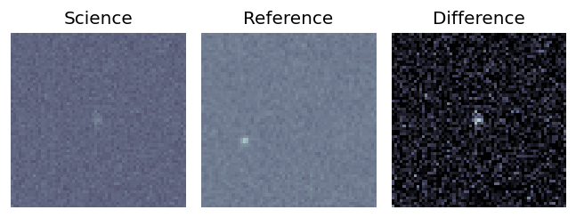
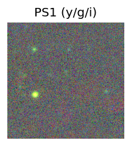
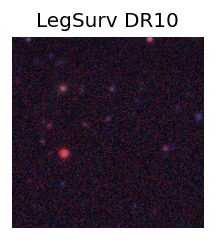
TESS: Sectors [23 46 50 91]
PS1: 0 sources in 3 arcsec
LegacySurvey: 1 sources in 3 arcsec Closest: d = 0.87 arcsec, 269.4 deg (east of north) photoz=1.04 (68% bounds 0.64, 1.51), type=PSF peak abs mag = -25.07 (68% bounds -23.76, -26.07)
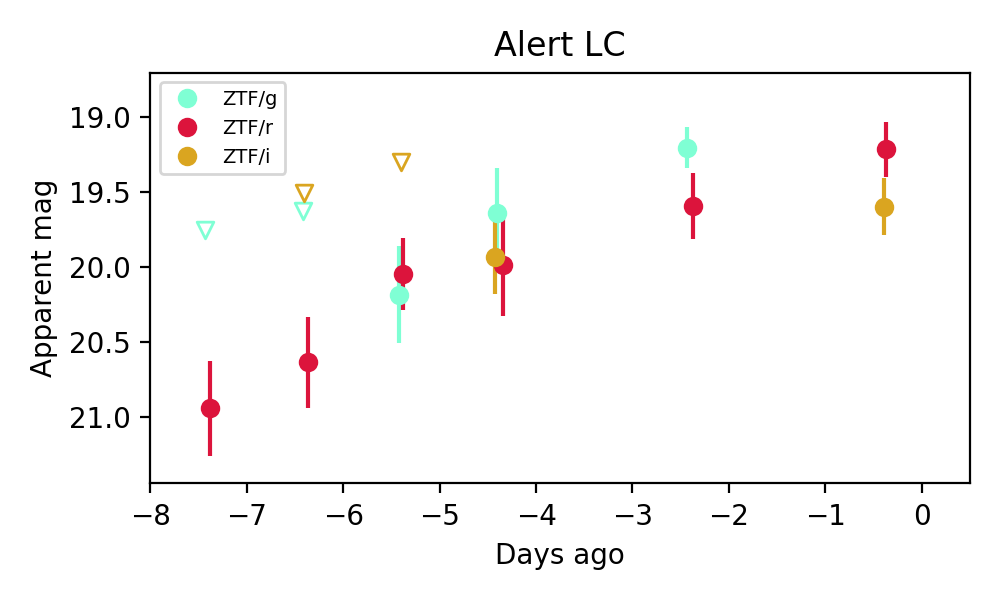
Extinction-corrected gr color:
From alerts: -0.38 +/- 0.45 mag
Extinction-corrected gi color:
From alerts: -0.35 +/- 0.39 mag
Extinction-corrected ri color:
From alerts: 0.03 +/- 0.42 mag
Consistent with synchrotron, g-r>0!
Rise Rate:
g: 0.3 mag/day
r: 0.36 mag/day
Fade Rate:
1. [ZTF] ZTF26abekgkd (FBOT?) [Back to Top] [Share] [Trigger Swift] [Fritz Alert] [Fritz Source] [Lasair]RA, Dec: 191.43318, -1.49551 12h45m43.96s, -1d-29m-43.84sGalactic (l, b): 299.95774, 61.34329 WARNING: 3.15 deg from ecliptic plane ext(g-r) = 0.031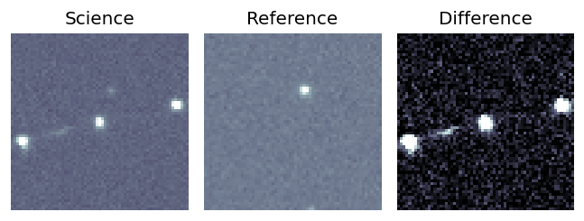
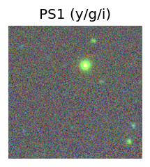
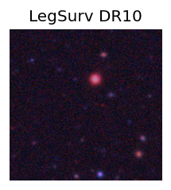
TESS: Sectors [ 46 91 115]
PS1: 0 sources in 3 arcsec
LegacySurvey: 1 sources in 3 arcsec Closest: d = 1.54 arcsec, 167.9 deg (east of north) photoz=1.18 (68% bounds 0.98, 1.51), type=REX peak abs mag = -27.87 (68% bounds -27.39, -28.53)
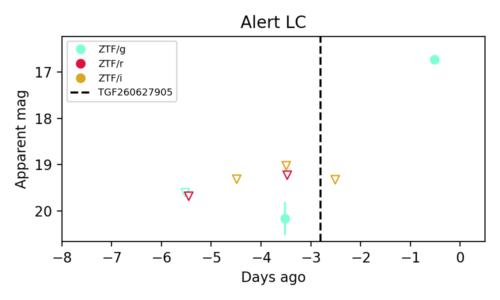
Extinction-corrected gr color:
From alerts: 0.91 +/- 99 mag
Extinction-corrected gi color:
From alerts: 1.1 +/- 99 mag
Rise Rate:
g: 1.14 mag/day
Fade Rate:
2. [LSST] 170600338950717572 (Afterglow?) [Back to Top] [Fritz Alert] [Fritz Source] [Lasair]RA, Dec: 358.88656, 3.53308 23h55m32.77s, 3d31m59.10sGalactic (l, b): 97.03949, -56.5027 WARNING: 3.68 deg from ecliptic plane ext(g-r) = 0.034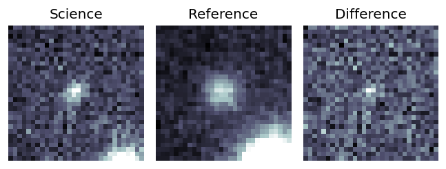
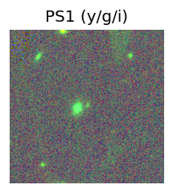
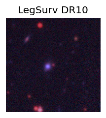
TESS: Sectors [42 70]
SDSS (<15 kpc):Found SDSS phot-z: z=0.09; peak abs mag = -16.02
PS1: 0 sources in 3 arcsec
LegacySurvey: 1 sources in 3 arcsec Closest: d = 0.03 arcsec, 37.3 deg (east of north) photoz=0.99 (68% bounds 0.9, 1.08), type=REX peak abs mag = -21.91 (68% bounds -21.64, -22.14)
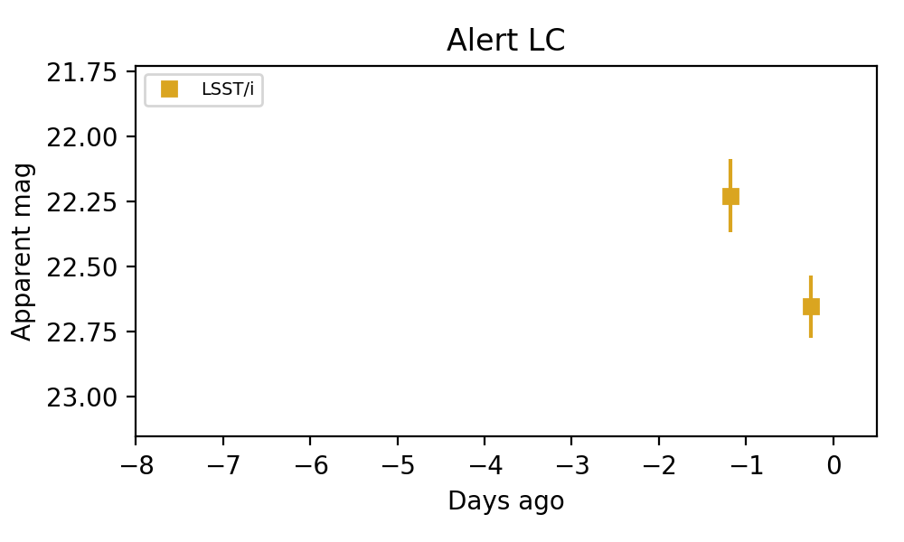
Rise Rate:
Fade Rate:
i: 0.46 mag/day
3. [LSST] 170600338973786209 (Afterglow?) [Back to Top] [Fritz Alert] [Fritz Source] [Lasair]RA, Dec: 359.17488, 2.89585 23h56m41.97s, 2d53m45.05sGalactic (l, b): 97.0711, -57.20173 WARNING: 2.99 deg from ecliptic plane ext(g-r) = 0.023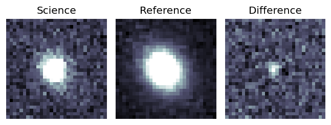
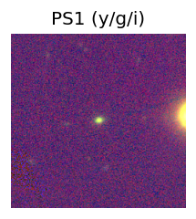
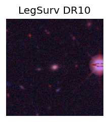
TESS: Sectors [42 70]
SDSS (<15 kpc):Found SDSS phot-z: z=0.26; peak abs mag = -19.06
PS1: 0 sources in 3 arcsec
LegacySurvey: 1 sources in 3 arcsec Closest: d = 0.08 arcsec, 185.3 deg (east of north) photoz=0.23 (68% bounds 0.22, 0.24), type=SER peak abs mag = -18.68 (68% bounds -18.61, -18.8)
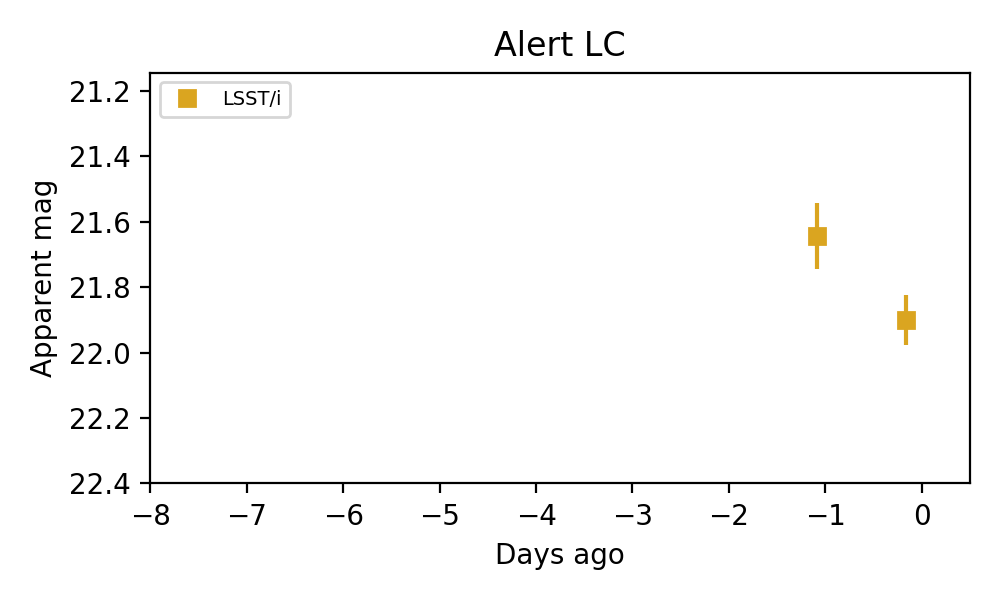
Rise Rate:
Fade Rate:
i: 0.28 mag/day
4. [LSST] 170600339070779476 (Afterglow?) [Back to Top] [Fritz Alert] [Fritz Source] [Lasair]RA, Dec: 358.61293, -0.295 23h54m27.10s, 0d-17m-42.01sGalactic (l, b): 93.56722, -59.87739 WARNING: 0.28 deg from ecliptic plane ext(g-r) = 0.031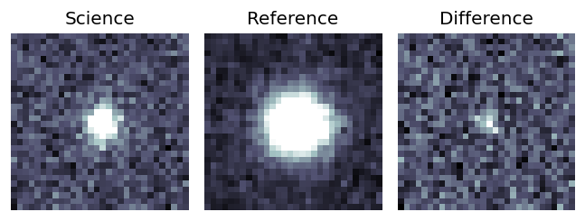
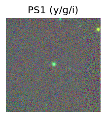
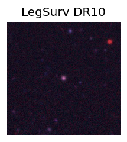
Milliquas v6 (2 arcsec):Found None (description), name = None, QSO probability: None %
TESS: Sectors [42 70]
SDSS (<15 kpc):Found SDSS phot-z: z=0.43; peak abs mag = -19.94
PS1: 0 sources in 3 arcsec
LegacySurvey: 1 sources in 3 arcsec Closest: d = 0.03 arcsec, 153.5 deg (east of north) photoz=0.4 (68% bounds 0.33, 0.48), type=REX peak abs mag = -19.75 (68% bounds -19.27, -20.19)
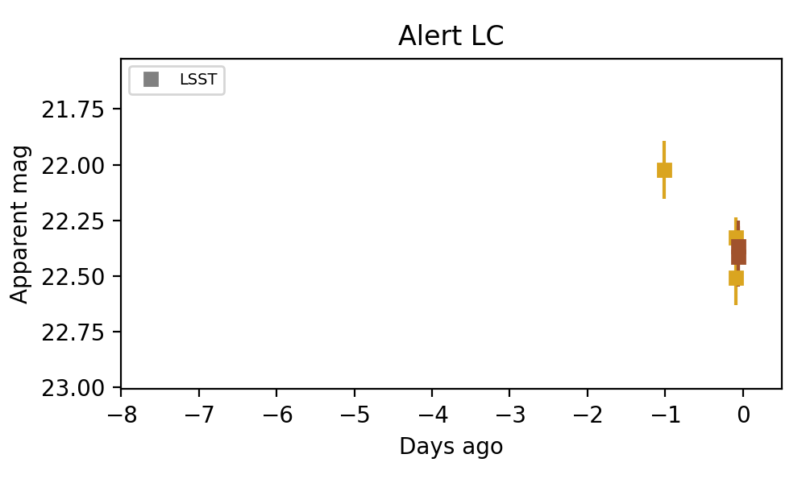
Extinction-corrected iz color:
From alerts: -0.0 +/- 0.12 mag
Consistent with synchrotron, g-r>0!
Rise Rate:
Fade Rate:
i: 0.4 mag/day